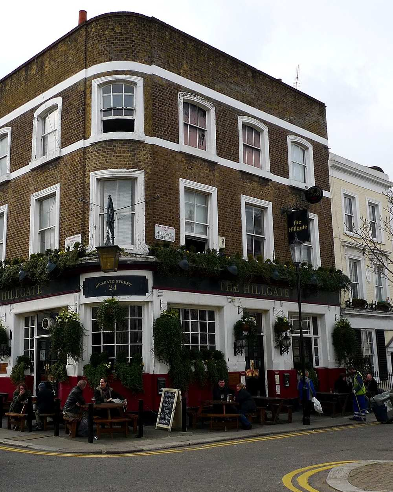
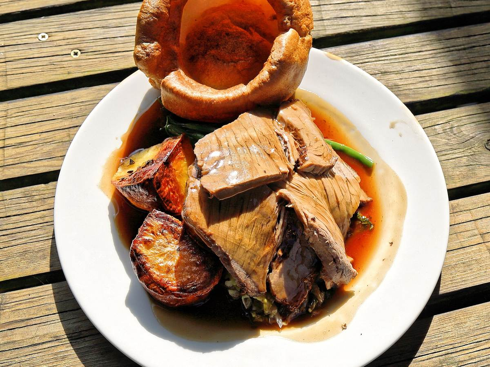
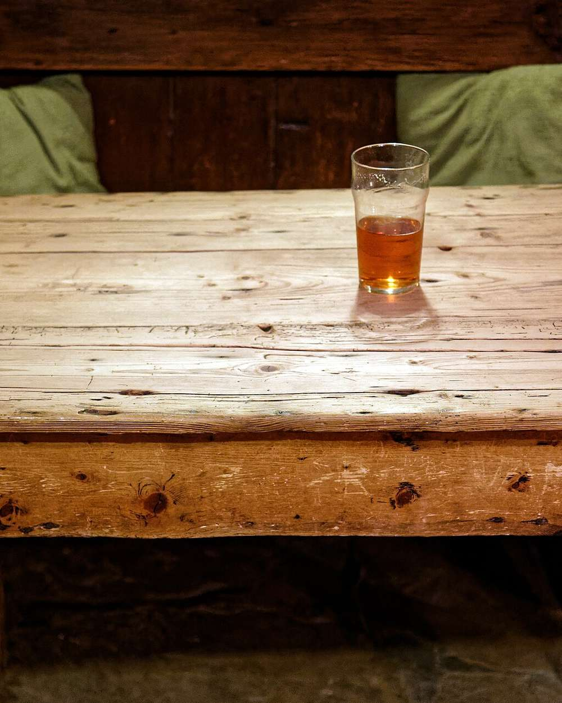

Freehouse
The Hillgate
Est. 1885 · Hillgate Street · W8

A warm welcome every time. A Notting Hill landmark with the charm of a traditional pub, tucked into the pretty streets behind Notting Hill Gate station.
Open daily from noon
Our ethos
“We believe a pub should be the soul of its neighbourhood.”
Simple pleasures: well-kept ales, delicious food and a warm, personal atmosphere. The Hillgate is part of a small, family-owned group of neighbourhood pubs across London, serving the best of seasonal British produce.
Bill of fare
Simple food is good food
From The Hillgate’s current sample menus; dishes change with the seasons. A discretionary 12.5% service charge is added. Card payments only.
Small plates & snacks
- Cumberland scotch egg, apple ketchup8.5
- Potted Norfolk shrimp crumpet8
- Lobster arancini, aioli9.5
- Twice-cooked cheese soufflé, Somerset Brie sauce (v)12
- Hereford steak tartare, beef dripping toast14
- Seasonal wild mushrooms on toast (v)14
Mains
- Beer-battered fillet of haddock, chips, minted peas21.5
- The Hillgate burger, smoked Applewood, pickle relish19.5
- Suffolk chicken, leek & tarragon pie24
- Roast North Sea cod, cockles & parsley sauce28
- 7-hour slow-cooked venison shank, pearl barley27
- Peak District sirloin steak, bone marrow butter36

Sundays, noon – 9pm
The Sunday roast
- Roast sirloin of Shropshire beef, creamed horseradish28
- Leg of Devon lamb, mint sauce28
- Tarragon-roasted Suffolk chicken, bread sauce24
- Mushroom & butternut Wellington (vg)19
All served with roast potatoes, seasonal greens, roots, Yorkshire pudding and gravy.
Puddings
- Sticky toffee pudding, butterscotch sauce (v/gf)8.5
- Orange marmalade brioche & butter pudding (v)8.5
- Chocolate mousse, Chantilly cream (gf)8
- Affogato, honeycomb (gf)8

Private hire
The Racks Dining Room
One of Notting Hill’s best-kept secrets: a first-floor dining room, cosy and intimate, available for private hire throughout the year, for all sorts of events.
- 32
- seated
- 45
- standing
Find us
24 Hillgate Street
London W8 7SR
Behind Notting Hill Gate station.
The pub
| Monday | noon – 11pm |
|---|---|
| Tuesday | noon – 11pm |
| Wednesday | noon – 11pm |
| Thursday | noon – 11pm |
| Friday | noon – 11pm |
| Saturday | noon – 11pm |
| Sunday | noon – 10.30pm |
The kitchen
| Monday – Friday | noon – 3pm · 5pm – 10pm |
|---|---|
| Saturday | noon – 10pm |
| Sunday | noon – 9pm |